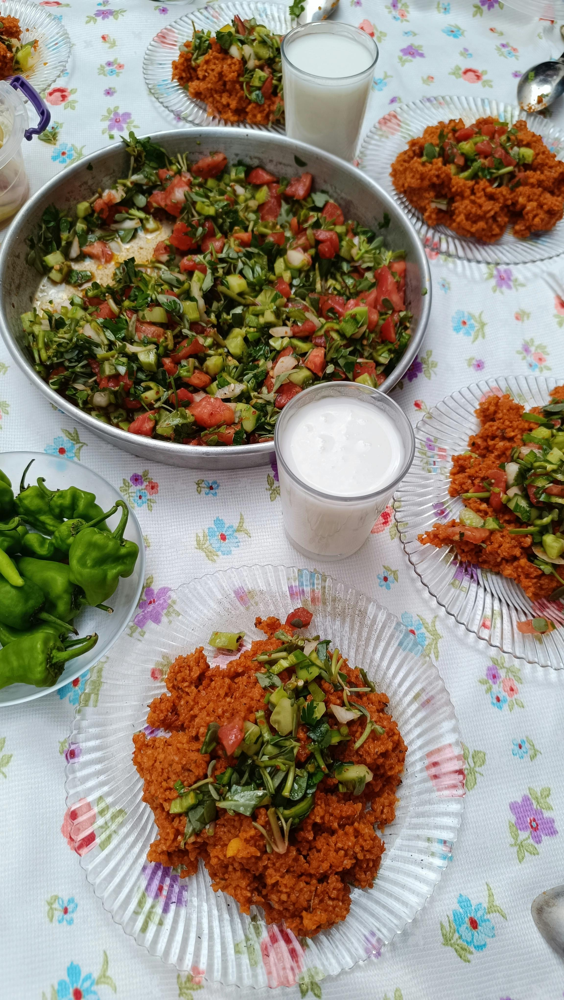

Home
Ayran

Ayran was invented accidentally 14 centuries ago by Gokturk Turkish people. It's a light, flavorful, and pretty cheap drink, and it's also pretty easy to make.
Ingredients:
- Yogurt
- Water
- Salt (optional)
- Garlic (optional)
Direction
- Add yogurt to a pitcher.
- Add the same amount of water. If you add 1 cup of yogurt, add 1 cup water then.
- If you desire, you may add a pinch of salt.
- If you desire, you may add a little bit of garlic. That's not a popular option, but some Turkish people love to add garlic.